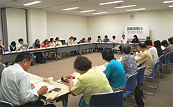
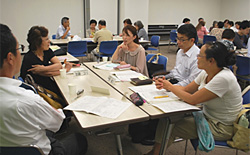
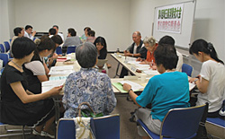

|
|
■議 題  1．初参加の委員さん自己紹介、第5回実行委員会の報告、プレ学習会アンケート、スケジュール、資料の広告掲載、県との懇談会日程、第7回実行委員会の日程等を報告しました。 2．消費者大会基調報告4次案、県への要請書(2次案)、大会アピール2次案を提案し、討議しました。
3．市町村における消費生活関連事業調査の概要(案)を報告しました。  4．全体会について 前回とプログラムが変更になったこと、時間の流れや舞台での実行委員団体着席場所を説明し確認しました。 5．大会当日の要員と集合時間について 集合時間、集合場所の最終確認をしました。当日の分科会ごとの打合せを、各分科会会場で、助言者と昼食をとりながら行うことを確認しました。  6．今年の各団体の参加申し込み状況を確認しました。 7．報告集について、経費削減と発行時期の早期化のため、ページ数縮小、記録用紙の説明をしました。 8．各分科会の進捗と学習内容等について、各責任者より説明がありました。その後、分科会ごとに分かれて役割分担や運営等についての最終確認を行ないました。 |